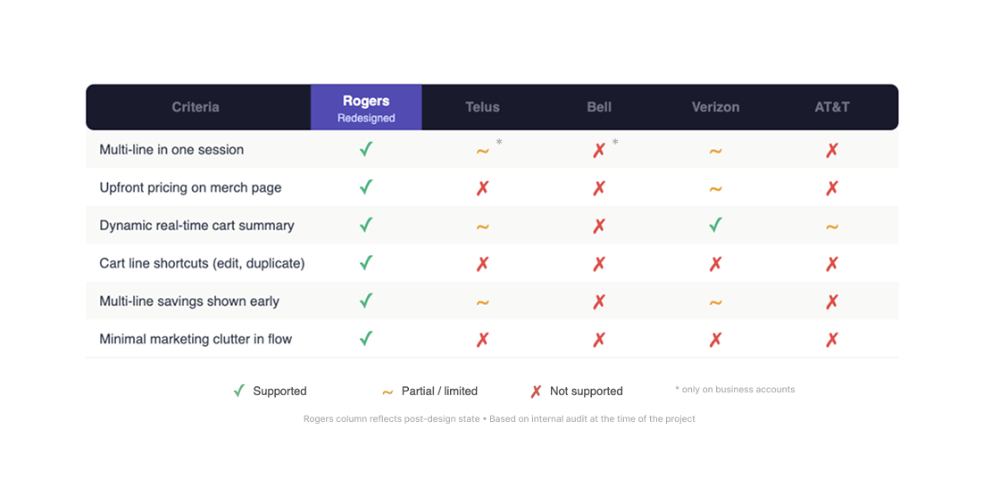
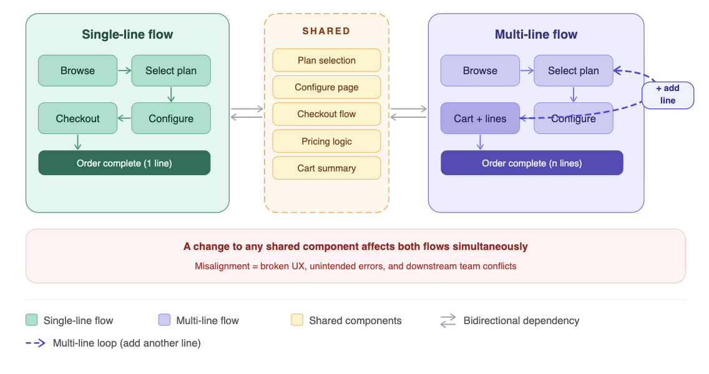
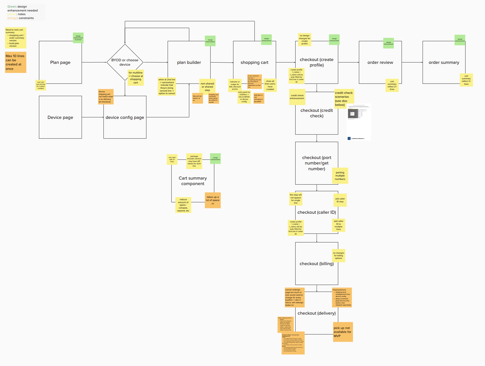
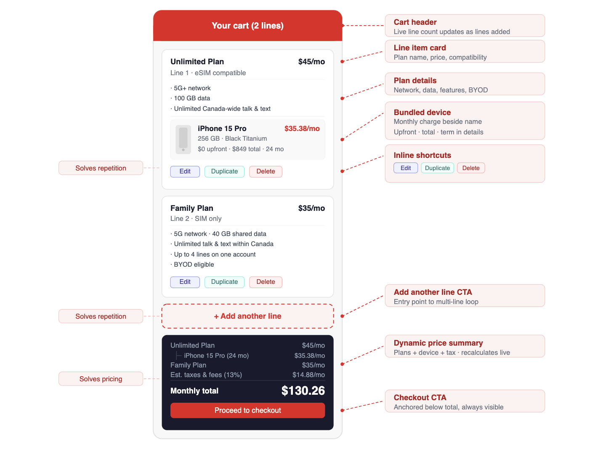

01 — Context
One of Canada's largest telcos, with a checkout problem
Rogers Wireless is the entry point for millions of new customers — referred to internally as New Activation Customers (NACs) — purchasing phone plans and lines. But the purchase flow had a structural gap: there was no way to buy more than one line in a single session. Each line required a full, separate checkout journey — start to finish, every time.
For families, small businesses, and any customer adding multiple lines, this meant completing the same multi-step flow repeatedly. The drop-off rate was significant, and pricing confusion throughout the flow was making it worse.
02 — Problem
Two friction points compounding each other
The absence of multi-line support wasn't just an inconvenience — it was eroding trust at the most sensitive moment in the purchase journey. And unclear pricing was making it worse.
Repetitive checkout
Customers buying plans for a family or team had to complete the full purchase journey separately for every line — each repetition adding friction and increasing the likelihood of abandonment before they finished.
Pricing confusion
Pricing on the site was frequently misinterpreted. Users couldn't tell what they'd actually be charged until late in the flow — eroding trust at exactly the moment it mattered most.
Shared infrastructure
The purchase flow was shared infrastructure — any change affected multiple teams and ongoing projects simultaneously. Designing in isolation wasn't an option.
Back-end constraints
There was no existing multi-line functionality in the back-end architecture. The solution had to be grounded in what was actually buildable — not just what was desirable.
03 — Research & discovery
Mapping constraints before touching a wireframe
Because the purchase flow touched so many teams, I started by mapping stakeholder KPIs — understanding the constraints imposed by the existing flow structure before proposing anything. This kept us away from unnecessary design effort and toward practical, approvable solutions.
I also audited the purchase flows of Telus, Bell, Verizon, and AT&T. The finding was consistent: these platforms were bloated with marketing content at the exact moments users needed utility. Dynamic pricing was hidden until the cart stage, and cart summaries were minimal.
Shared weakness across all competitors
Marketing over utility
Every competitor prioritised promotional content at the moments users needed clarity — obscuring pricing and burying the cart under upsells.
The opportunity
Transparency as differentiator
Not more features — but surface the right information at the right moment. Pricing upfront. Cart summary that updates in real time. A flow that respects users' time.

Adjacent features — device trade-ins and eSIM activation — intersected with the purchase flow and had to remain undisrupted. Making the research comprehensive enough to cover these dependencies was essential before any design decisions were made.
After research, three areas rose above the others as the highest-impact changes given the constraints: multi-line entry points in the cart, a restructured cart with real-time pricing, and transparent pricing surfaced earlier in the flow — in that priority order. Several secondary adjustments were flagged within the checkout and configuration steps, but these three were the structural fixes the experience needed most.
04 — Systemic work
Building for scale, not just this flow
Beyond individual screens, the single and multi-line flows were shared infrastructure — a change to one had direct ripple effects on the other. I mapped these inter-system dependencies explicitly before any design decisions were locked: ensuring new components could handle asynchronous API failures gracefully, that existing single-line flows remained intact, and that adjacent features (device trade-ins, eSIM activation) were fully undisrupted throughout the redesign.


I also authored documentation, usage guidelines, and contribution models so teams could autonomously adopt and build upon the system. Delivering a UI kit alone isn't sufficient — teams need the context to use it correctly without bottlenecking on the original designer.
05 — Solutions
Four changes that fixed the flow
Final designs adjusted per NDA. Contact fionaqylai@gmail.com for the full case study.

1. Multi-line entry points in the cart
The most direct fix to the repetitive checkout problem: entry points within the shopping cart letting users add additional lines without leaving the purchase flow. Customers could now build their full order in one continuous session. This single structural change eliminated the core source of friction.
2. Cart redesigned for multi-line management
The cart was rebuilt from scratch to support multiple lines effectively. User-friendly shortcuts — duplicate, delete, edit — let customers manage a multi-line order without unnecessary friction. A clear entry point to add another line was embedded directly in the cart, keeping purchase momentum alive.
3. Dynamic cart summary
A real-time pricing panel updating as users made selections. Users had a clear, running view of total cost at all times — significantly reducing mid-session abandonment due to pricing uncertainty. Seeing an accurate total in real time addressed the trust erosion that unclear pricing had been causing.
4. Transparent pricing at the merchandising page
Moving pricing upstream — surfacing it directly on the merchandising page rather than hiding it until cart stage. Users could see what each plan cost, and what they'd save by adding multiple lines, before committing to any selection. This reduced misinterpretation and created a positive incentive for multi-line purchasing.

06 — Outcomes
For the first time, customers could complete a full multi-line order in one session
The redesign removed the structural gap that had been driving high-intent drop-off — and the systemic work ensured teams could build on top of it without bottlenecking on the original designer.
- Customers could build and complete a full multi-line order in a single session for the first time — removing the primary cause of high-intent drop-off in the purchase flow
- Pricing surfaced at the merchandising stage — before any selection commitment — closing the trust gap that had been driving mid-funnel abandonment
- Cart redesign acknowledged in stakeholder review as the clearest UX improvement; duplicate/edit/remove shortcuts resolved a long-standing usability complaint
- Adjacent features (trade-ins, eSIM activation) fully undisrupted throughout the redesign — a constraint met, not just a risk avoided
"Adding the 'Add another line' entry point to the cart sounds simple — and it was, structurally. But getting there required mapping every stakeholder KPI and every back-end constraint first. The simplest solution took the most groundwork."
07 — Reflection
Cross-functional alignment as a design discipline
Working on shared infrastructure made it impossible to design in a vacuum. Every decision had ripple effects across teams and projects I had to account for before proposing anything. That constraint turned out to be sharpening — it forced clearer thinking about scope, sequencing, and what "done" actually meant for each change.
The back-end constraint was a useful forcing function too. Knowing multi-line functionality didn't exist in the back end meant we couldn't just wireframe an ideal state — we had to work directly with engineers to stress-test assumptions early and avoid late-stage blockers. That collaboration produced a better-scoped solution than purely UX-led exploration would have.